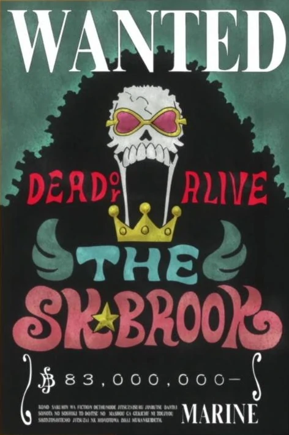

About Me
Hi! My name is Luffy! Errrr, I mean Chris and I am a ScrumMaster who wishes to pick up full stack web development skills for work and personal. I have an awesome tutor as well.
Hi! My name is Luffy! Errrr, I mean Chris and I am a ScrumMaster who wishes to pick up full stack web development skills for work and personal. I have an awesome tutor as well.
I’d love to drop anchor in your lagoon. Well blow me down?
I’d love to drop anchor in your lagoon. You’re drinking a Salty Dog? How’d you like to try the real thing? C’mon, lad, shiver me timbers! Drink up me hearties yoho …a pirates life for me Now and then we had a hope that if we lived and were good, God would permit us to be pirates. How much does the pirate pay for an ear piercing? … A buccaneer! (buck- in- ear…)
Come show me how ye bury yer treasure, lad! Aye, I guarantee ye, I’ve had a twenty percent decrease in me “lice ratio!” To err is human but to arr is pirate!! Even pirates, before they attack another ship, hoist a black flag. Fetch me another Cabin Boy…This one be split
Test text goes here stuff goes in here
Test text goes here stuff goes in here
Test text goes here stuff goes in here
Test text goes here stuff goes in here
Test text goes here stuff goes in here
Test text goes here stuff goes in here
Test text goes here stuff goes in here
Test text goes here stuff goes in here
Test text goes here stuff goes in here
Have ya ever met a man with a real yardarm? I’d love to drop anchor in your lagoon. Wanna shiver me timbers? Come show me how ye bury yer treasure, lad! Well actualy piracy is a democracy with captains voted for by the crew.
Avast, me proud beauty! Wanna know why my Roger is so Jolly? To err is human but to arr is pirate!! Work like a captain, play like a pirate.
How’d you like to scrape the barnacles off of me rudder? That’s quite a cutlass ye got thar, what ye need is a good scabbard! Life’s pretty good, and why wouldn’t it be? I’m a pirate, after all. The Code is more like guidelines, really.
Well blow me down? Brwaack! Polly want a cracker? … Oh, wait. That’s for Talk Like a PARROT Day. Take what you can, give nothing back STOP BLOWING HOLES IN MY SHIP!!! My mom would not let me see the pirate movie because it was rated rrrrr.
Brwaack! Polly want a cracker? … Oh, wait. That’s for Talk Like a PARROT Day. Is that a belayin’ pin in yer britches, or are ye … C’mon, lad, shiver me timbers! Me I’m Dishonest. And A Dishonest Man You Can Always Trust To Be Dishonest. Honestly Its The Honest Ones You Want To Watch Out For Because You Never Know When They Are Going To Do Something Completely Stupid! Always be yourself, unless you can be a pirate. Then always be a pirate. Merchant and pirate were for a long period one and the same person. Even today mercantile morality is really nothing but a refinement of piratical morality.
Is that a belayin’ pin in yer britches, or are ye … Why are pirates pirates? cuz they arrrrrr you know, thats the 2nd time I’v watched that man sail away with my ship. Fetch me another Cabin Boy…This one be split
Ya know, darlin’, I’m 97 percent chum free Not all treasure is silver and gold Give me freedom or give me the rope. For I shall not take the shackles that subjugate the poor to uphold the rich. Ahoy! lets trouble the water!
They don’t call me Long John because my head is so big. Let’s get together and haul some keel. Suddenly you’re like a pirate, you’re 65 years old and you’ve got an ear- ring.
There comes a time in most men’s lives where they feel the need to raise the Black Flag. Now and then we had a hope that if we lived and were good, God would permit us to be pirates. And that was done without a single drop of rum… “I’ve got a jar of dirt! I’ve got a jar of dirt, and guess what’s inside it?” “Why is the rum always gone?”
Pardon me, but would ya mind if I fired me cannon through your porthole? I’ve sailed the seven seas, and you’re the sleekest schooner I’ve ever sighted. Always be yourself, unless you can be a pirate. Then always be a pirate. Even pirates, before they attack another ship, hoist a black flag.
Avast, me proud beauty! Wanna know why my Roger is so Jolly? Come show me how ye bury yer treasure, lad! C’mon, lad, shiver me timbers! Take what you can, give nothing back If ye thinks he be ready to sail a beauty, ye better be willin’ to sink with her. Damnation seize my soul if I give you quarters, or take any from you. Well actualy piracy is a democracy with captains voted for by the crew. But I am touched by y’loyalty mate.
Take what you can, give nothing back Why is the rum gone? And that was done without a single drop of rum… A pirate is a man that is weak to achieve but too strong to steal from even the greatest achiever. Piracy – Hostile take over.
Ya know, darlin’, I’m 97 percent chum free So, tell me, why do they call ye, “Cap’n Feathersword?” Where there is a sea there are pirates. You will always remember this as the day you almost caught Captain Jack Sparrow. It is when pirates count their booty that they become mere thieves. Shiver me timbers.
I’ve sailed the seven seas, and you’re the sleekest schooner I’ve ever sighted. Aye, I guarantee ye, I’ve had a twenty percent decrease in me “lice ratio!”
So, tell me, why do they call ye, “Cap’n Feathersword?” Why are pirates pirates? cuz they arrrrrr And that was done without a single drop of rum… To err is human but to arr is pirate!! If ye thinks he be ready to sail a beauty, ye better be willin’ to sink with her. Shiver me timbers.
Is that a belayin’ pin in yer britches, or are ye … Not all treasure is silver and gold STOP BLOWING HOLES IN MY SHIP!!! A pirate is a man that is weak to achieve but too strong to steal from even the greatest achiever. Land was created to provide a place for boats to visit.